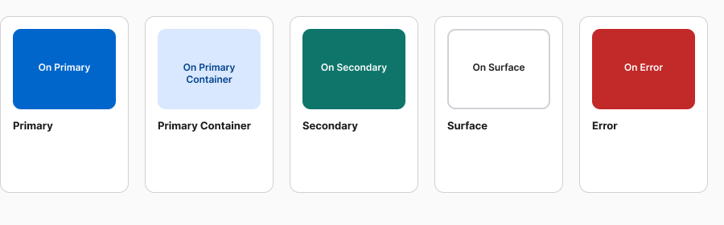
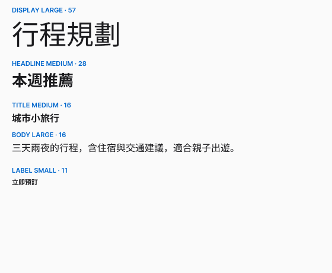
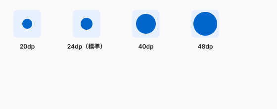

Unit 03 學會了怎麼操作 Figma，這堂課學怎麼決定「用什麼顏色、多大字、什麼狀態」——四個會被重複使用一整個專題的規範。
Agenda
Color Roles
| 角色 | 用途 |
|---|---|
| Primary / On Primary | 主品牌色與其對比色，用在關鍵動作、高強調元素 |
| Primary Container | Primary 的淺色版本，用在強調較低的元件，例如選取狀態 |
| Secondary / Tertiary | 次要動作與第三強調色，做視覺平衡 |
| Surface / On Surface | 卡片、選單的背景色，與疊在上面的文字 |
Roles In Practice

每張卡片的色塊是角色本身，色塊上的文字用對應的 On 角色——這是實際套用時最容易漏掉的一步：只挑背景色，忘了同時決定疊在上面的文字色。
Choosing A Scheme
WCAG Contrast
Type Scale

Display（最大，短而重要的文字）→ Headline（區塊標題）→ Title（Card／對話框內的標題）→ Body（內文）→ Label（按鈕、標籤等最小的文字）。
Type Tokens
| 屬性 | 在調什麼 |
|---|---|
| Font size | 文字的視覺大小 |
| Line height | 確保可讀性的垂直間距 |
| Font weight | 粗細與強調程度 |
| Letter spacing | 調整字元密度的水平間距（Tracking） |
Icon Principles
Icon Sizing

20dp 用在桌面、密集版面與小型視覺元素；40dp／48dp 搭配 Display／Headline 這類大字級與大螢幕。跟文字對齊時，Icon 基準線要下移約文字字級的 11.5%。
Button States
| 狀態 | 代表意思 | 視覺處理 |
|---|---|---|
| Enabled | 已準備好被點擊 | 高對比，清楚的標籤 |
| Hover | 游標移到上面 | 顏色些微加深或加陰影 |
| Pressed | 正在點擊的瞬間 | 顏色變化 + 輕微縮小，100–150ms 內要有回饋 |
| Focus | 鍵盤 Tab 導覽到這裡 | 清楚的外框，不能只靠顏色（無障礙硬性要求） |
| Disabled | 目前不可用 | 降低對比，但文字仍要可讀 |
In Practice
Focus 用外框而不是只改顏色；Disabled 降低對比但文字仍讀得出來——這兩點最容易被學生省略。
Button Labels
| 原則 | 意思 |
|---|---|
| 用動詞 | 「送出」比「確定」清楚，一眼看出這是動作 |
| 標題大小寫 | 四個字母以下的冠詞、介系詞不用大寫，其餘字首大寫 |
| 簡短 | 過長的文字會擠壓介面，小螢幕上可能被截斷 |
| 邊框只在必要時加 | 系統按鈕預設無邊框無背景，需要時才加 |
In Figma
Part 3
Common Blockers
| 卡住的地方 | 原因 | 怎麼解 |
|---|---|---|
| 色塊上文字看不清楚 | 只選了背景色，沒有另外決定對應的 On 色 | 每個角色都要有配對的 On 色，兩個一起選 |
| 色塊對比度不過 4.5:1 | 背景色跟 On 色這組配對沒有實測過，只靠眼睛判斷夠不夠深 | 用對比度檢查工具實測每一組配對，不夠就調整 On 色的深淺 |
| Icon 看起來浮在文字上方 | 沒有做基準線位移 | Icon 往下移動約文字字級的 11.5% |
| Disabled 按鈕文字讀不出來 | 對比降太多，沒有核對文字可讀性 | Disabled 要降低對比，但降完要親眼確認文字還讀得出來 |
Homework Preview
Resources
resources/。Wrap Up